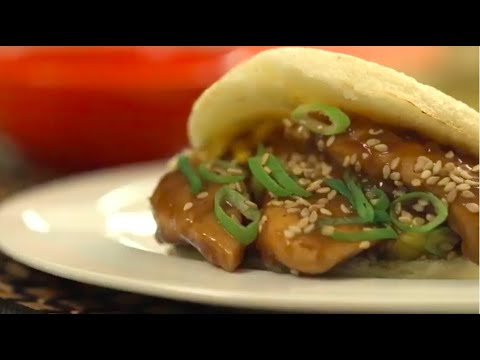

Como hacer unas ricas arepas con pollo teriyaki

¡Descubre la fusión culinaria definitiva con nuestro Pollo Teriyaki con Arepas Fusion! Sumérgete en un viaje gastronómico que combina lo mejor de la cocina asiática y latinoamericana en una explosión de sabores irresistibles.
Imagina tiernas y jugosas pechugas de pollo, marinadas en una mezcla de salsa de soja, miel y especias exquisitas que las impregnan con un sabor dulce y salado. Cada bocado te transportará a la vibrante y sabrosa cultura asiática.
Pero eso no es todo, nuestras arepas fusionadas añaden un toque de sorpresa y textura crujiente a esta experiencia culinaria única. Con su masa dorada y crujiente, rellena de pollo teriyaki caramelizado, las arepas fusion se convierten en el lienzo perfecto para un encuentro de sabores que deleitará a tus papilas gustativas.
Ingredientes:
Para el pollo teriyaki
- 2 pechugas de pollo, cortadas en trozos.
- 3 cucharadas de salsa de soja.
- 2 cucharadas de miel.
- 1 cucharada de vinagre de arroz.
- 1 cucharadita de jengibre rallado.
- 2 dientes de ajo, picados.
- 2 cucharadas de aceite vegetal.
- Semillas de sésamo tostado (opcional, para decorar).
Para las Arepas Fusion:
- 2 tazas de harina de maíz precocida.
- 1 ½ tazas de agua tibia.
- ½ cucharadita de sal.
- 2 cucharadas de mantequilla.
- Relleno de tu elección (por ejemplo, el pollo teriyaki preparado anteriormente).